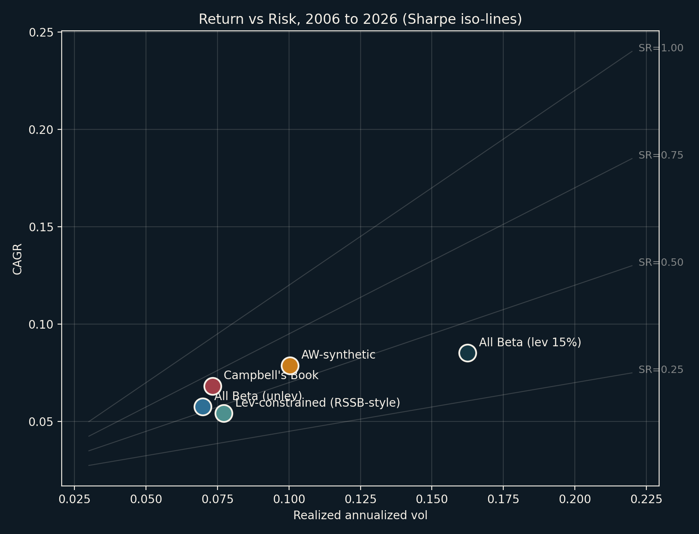
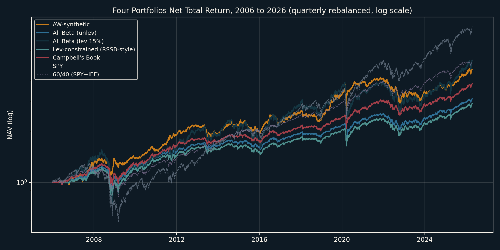
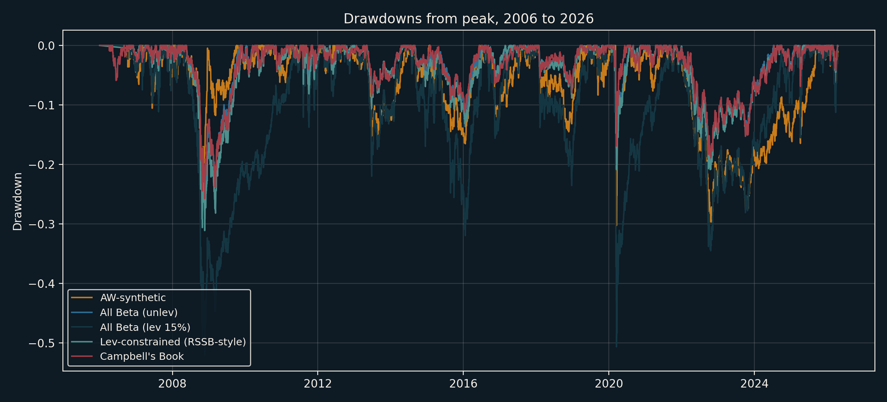
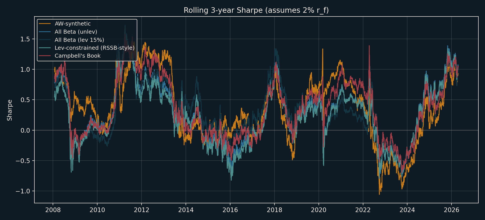
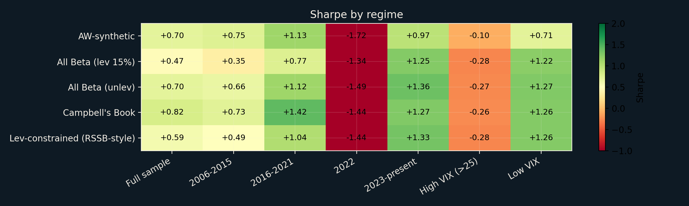
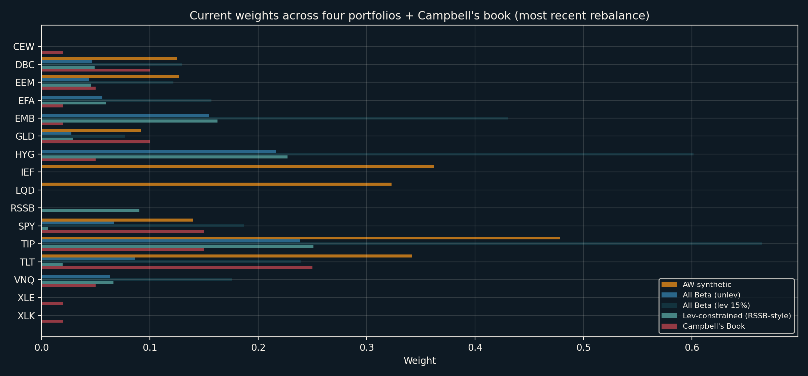

Absolute volatility vs stock count
Lower pairwise correlation means faster diversification. We mark the stock count needed to capture 90% of the available benefit, with the historical-average case emphasized.
This project recreates the core argument for the alpha-beta essay in two stages: first, how diversification inside equities saturates into a single beta floor; second, how macro sleeves diversify that equity beta in the All Weather / risk-parity sense; and third, how live beta products load on those sleeves and what a diversification-first benchmark portfolio looks like.
The stock-count curve matters only up to the point where single-name risk is mostly gone. After that, you are refining the same trade: equity beta.
Lower pairwise correlation means faster diversification. We mark the stock count needed to capture 90% of the available benefit, with the historical-average case emphasized.
How quickly the available single-name benefit gets exhausted.
Decision-space view of when the next name stops mattering.
The idiosyncratic term dies. The systematic term survives.
The 12 sleeves are not the answer. They are the observations. PCA on the sleeve covariance tells us how many real macro factors are underneath them, and the factor-ERC view shows how All Weather-style diversification is really a risk budget across those latent drivers.
The point of the scree plot is simple: 12 sleeves do not buy you 12 independent bets. The eigenvalues tell you how many factors are actually doing the work.
The heatmap is the actual factor map. Positive and negative loadings show which sleeves each principal component is bundling together or pulling apart.
Gray bars show how much raw sleeve variance each principal factor explains. Amber bars show the equal-risk budget across the first six factors.
The list below translates the first 5-7 components into economic language and surfaces the strongest sleeve loadings on each one.
The red line is the ex-post best factor mix at a 16% target volatility. The blue line is the simple equal-weight-across-factors portfolio at the same target volatility.
Here the beta-fund universe is compared directly to a broader sleeve map: `SPY`, `EFA`, `TLT`, `TIP`, `LQD`, `HYG`, `EEM`, `EMB`, `DBC`, `GLD`, `VNQ`, `CEW`, plus the sector tilts `XLK` and `XLE`. Then we build diversification-first sleeve portfolios at `1x`, `2x`, and `3x`, plus the fund-only alternatives, and compare the free construction against flagship All Weather / risk parity style products.
Pairwise daily return correlations between the 20 Rose beta funds and the expanded benchmark sleeve set. This is the fast way to see which products are really just equity beta in another wrapper.
Each cell compares a fund's sleeve fingerprint to a PCA loading vector. This is the bridge from product wrapper to underlying factor map.
One row per asset, one column per portfolio. The chart now includes the optimization rule itself, so the construction reads like a framework instead of a black box.
What if you have the raw sleeves? What if you have a hard 100% retirement-account cap? What if you only have SPY plus the funds, or only the funds?
The free 3x construction is compared directly against ALLW, RPAR, UPAR, NTSX, RSSB, and REMIX over their common overlap window.
The key numbers for the static sleeve constructions, the static fund optimizers, and the rolling top-5 fund portfolio.
Simple two-asset long-only min-vol blend: rank funds by how much annualized SPY volatility disappears. Fees are still shown, but the ordering here is raw diversification first.
Bridgewater-synthetic risk parity, Campbell's equal-risk-impact "All Beta" (unlevered and futures-levered), and the retail RSSB-style leverage-constrained build — backtested 2006 to 2026 on daily Rose data, quarterly rebalance, walk-forward vol estimates, transaction and financing costs applied. Plus Campbell's actual 14-ticker macro book as a benchmark.
Each portfolio as a point with Sharpe iso-lines. Same story, different tradeoffs.

2006 to 2026, quarterly rebalanced, financing and transaction cost applied.

How badly each book bled in 2008, 2020, and 2022.

How stable each book's risk-adjusted return has been.

Same portfolios across subperiods, VIX regime, and rising-rate regime. 2022 is where the risk-parity thesis was tested hardest.

Most recent rebalance. Note: "All Beta (lev 15%)" bars > 100% are gross exposure.

Formula: σmax = (rf + L) / (z − S). L = 20% DD budget, z = 2.0 (fat-tail), rf = 2%. A portfolio where realized vol > σmax is already over its leverage capacity; one where realized vol < σmax has unused leverage room.
These are the references currently grounding the blog frame. The next pass can deepen the alpha-beta allocation model with Rose series for correlations, priors, and uncertainty.